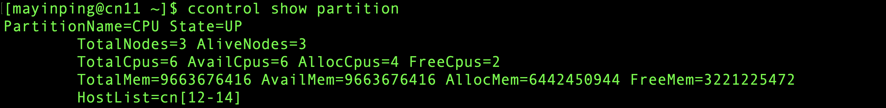
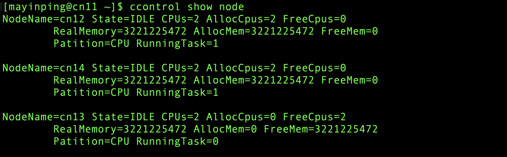

ccontrol 查看分区和节点状态
ccontrol可以查看分区和节点的状态。
1. 查看分区状态
ccontrol show partition
ccontrol show partition运行结果展示

主要输出项
- PartitionName：分区名
- State：分区状态
- TotalNodes：分区节点数目
- AliveNodes：分区中可运行的节点数目
- TotalCpus：分区中所有节点总CPU数目
- AvailCpus：分区中所有可以使用的CPU数目
- AllocCpus：分区中已经被分配的CPU数目
- FreeCpus：分区中空闲的CPU数目
- TotalMem：分区节点的总内存
- AvailMem：分区中当前可以使用的内存大小
- AllocMem：分区中已分配的内存大小
- FreeMem：分区中空闲的内存大小
- HostList：分区中所有节点的节点名列表
2. 查看节点状态
ccontrol show node
ccontrol show node运行结果展示

主要输出项
- NodeName：节点名
- State：节点状态
- IDLE： 节点空闲，可使用
- DOWN： 节点宕机，不可用
- CPUs：节点CPU数目
- AllocCpus：节点已分配的CPU数目
- FreeCpus：节点空闲的CPU数目
- RealMemory：节点的实际内存大小
- AllocMem：节点已经分配的内存大小
- FreeMem：节点空闲的内存大小
- Patition：节点所属分区
- RunningTask：节点上正在运行的作业数量